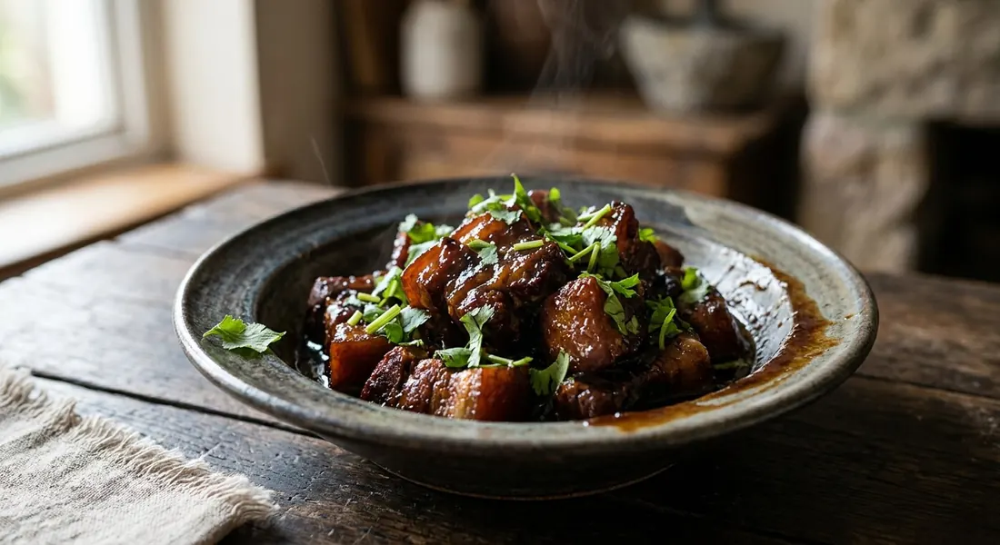

Pork belly, coriander root, garlic and pepper — braised in sweet soy until the fat turns glossy and the sauce clings to every piece. The dish Phuket inherited from its Hokkien settlers.

The name is the colour. Aroifin's explainer traces ฮ้อง to the Hokkien word for red — the same 红 behind Chinese hong shao rou — and the red comes the Chinese way: dark soy and long braising, not chillies. Moo hong is what happened when Hokkien settlers landed in Phuket and cooked their red-braised pork with the island's ingredients. Its extended family are the other "red water" dishes of Thai-Chinese tables: กระเพาะปลาน้ำแดง, red-braised fish maw, and shark fin soup in the same scarlet.
Under the red, though, it is a Thai grandmother's dish. The flavour sits on สามเกลอ, the three friends — coriander root, garlic, peppercorn — pounded together before anything else happens. Zomzaa's พี่ส้ม, cooking the old household recipe, adds a shallot and calls it สามบวกหนึ่งเกลอ; her version is explicit that it contains no five-spice, and that every family's moo hong is its own. That is the dish's real signature: black pepper in a braise, in the south, with sweetness following behind the salt.
It is also the rare Thai dish with a marinating step worth planning around — from an hour (Pim, whose Phuket friend inherited the recipe from her grandmother) to overnight (พี่ส้ม's). The pay-off is the finish: pork that holds its shape but gives way instantly, fat that has melted into the sauce, and a glaze that Pim reduces until the liquid has almost vanished. Kapook's Pantip cook skips the marinade altogether and gets the same dinner in an hour, with a handful of blended pineapple standing in for the sour that older recipes would borrow from tamarind or garcinia. All roads lead to the same pot of red.
| Thai | English | Amount |
|---|---|---|
| หมูสามชั้น | Pork belly | 1 kg |
| รากผักชี | Coriander root | 20 g |
| กระเทียม | Garlic | 30 g |
| พริกไทยขาวป่น | Ground white pepper | 1/4 tsp |
| พริกไทยดำป่น | Ground black pepper | 1/4 tsp |
| ผงพะโล้ | Five-spice powder | 1½ tsp |
| ซีอิ๊วดำ | Dark soy sauce | 2 tbsp |
| ซอสปรุงรส | Seasoning sauce (Golden Mountain-type) | 2 tbsp |
| ซีอิ๊วขาว | Light soy sauce | 3 tbsp |
| น้ำตาลทรายแดง | Brown sugar | 5 tbsp |
| น้ำเปล่า | Water | 700 ml |
| ผักชี | Fresh coriander, to garnish | — |
The old Phuket pot (Zomzaa's พี่ส้ม): 800 g belly marinated overnight in the pounded 3+1 เกลอ (coriander root, garlic, 3 tbsp black peppercorns and a shallot) with dark soy, oyster sauce, light soy, seasoning powder and raw sugar — then fried with the reserved aromatics until 70% cooked, simmered half an hour, five boiled eggs added, and another hour on a low flame. No five-spice, by design. Pim's pot: 1 kg belly, toasted star anise and cinnamon sticks pounded with the peppers and garlic, sweet dark soy, and an optional splash of Chinese rice wine — dry-fried without oil, then simmered about an hour until the liquid is almost gone. The pineapple pot (Kapook/Pantip): no marinade — the pounded aromatics fried until fragrant, belly fried until the surface tightens, dark soy for colour, then 3–4 pieces of blended pineapple and water; seasoned with light soy, palm sugar and salt, and ready in under an hour, boiled eggs to finish.
The five-spice question. Aroifin mixes in 1½ tsp of five-spice powder. Zomzaa's พี่ส้ม announces the opposite: her family recipe is the old kind, with no pha-lo spice at all. Pim sits between them — no powder, but whole star anise and cinnamon, toasted and pounded with the pepper. Kapook's cook uses none. Whether moo hong should smell of pha-lo is, it turns out, a family matter.
Salty or sweet first? Pim says the finished pot should be เค็มนำ หวาน — salty leading, sweet behind. Kapook's Pantip cook inverts it: sweet first, salt mild, with the pineapple's sour as the third note. Both are Phuket recipes; both claim the island.
The sour. Only Kapook's version has one — blended pineapple standing in for the tamarind or garcinia (ส้มแขก) of older southern pots, doing double duty by thickening the sauce. Every other source braises with nothing sour at all.
The marinade. Overnight (Zomzaa), one to two hours (Aroifin), one hour (Pim), or none whatsoever (Kapook — the aromatics go straight into the fry). The same divide runs through the searing step: Zomzaa fries the marinated pork to 70% cooked, Pim dry-fries it with no oil, Kapook fries just until the surface tightens, and Aroifin skips frying entirely.
Eggs. Zomzaa and Kapook add boiled eggs — chicken, duck or quail, the latter two for the better colour. Aroifin and Pim braise pork alone.
How wet it finishes. Aroifin's pot keeps a pourable, clinging sauce; Pim reduces until the liquid has nearly disappeared and the pork sits in its own glaze. The word both sides nod at is ขลุกขลิก — the consistency where sauce clings to meat instead of running off it.
This recipe is translated from the following Thai-language sources. Where they disagree, we've said so.
1. Aroifin — "วิธีทำ หมูฮ้อง เนื้อหมูเปื่อยนุ่ม เค็มหวานอร่อย สไตล์คนภูเก็ตแท้ ๆ" by thanyachanok (the recipe used here) — aroifin.com
2. Zomzaa — "วิธีทำหมูฮ้องภูเก็ต (สูตรโบราณ)" by พี่ส้ม (the old household recipe, no five-spice, overnight marinade) — zomzaa.com
3. ครัวบ้านพิม (Pim.in.th) — "หมูฮ่อง" (the Phuket family recipe with toasted spices) — pim.in.th
4. Kapook Cooking — "หมูฮ้อง สูตรหมูต้มซีอิ๊ว พร้อมเคล็ดลับเด็ดเนื้อนุ่มชุ่มฉ่ำ" (Pantip's มอแกนน้อย; the pineapple no-marinade version) — cooking.kapook.com